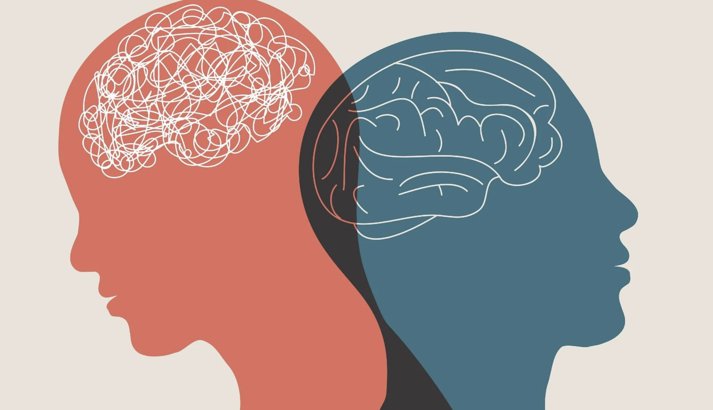
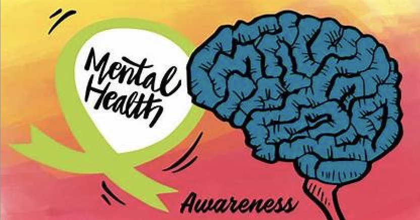

Mental health is a problem. It is often considered one of the most serious issues. This includes anxiety, depression, and several others. Many need professional help to manage/cope with these challenges. Anxiety is one of the most common mental illnesses worldwide. It is said that millions of people experience at least some form of anxiety. These factors point to the severity of these disorders. Some people can manage/cope with these challenges while others find it difficult and need extra help.
People often experience significant stress when they have mental health issues. In severe cases it can also lead to self-harm which would require professional help. This is because these disorders often impact a person's feelings, or how they respond to the disorders. Mental health issues also interfere with one's ability to work or affect their daily life significantly.Without help these disorders will worsen over time.
Mental health issues can make it quite difficult for someone to communicate with others for several reasons. Someone may feel that they will be judged, or not get the help needed. This can prevent someone from talking to their loved ones, since they either won't believe it or not help out. Another major reason they won't talk about it is because it's impacting them severely. Lot of times people aren't able to talk about it since it's so severe.
Home